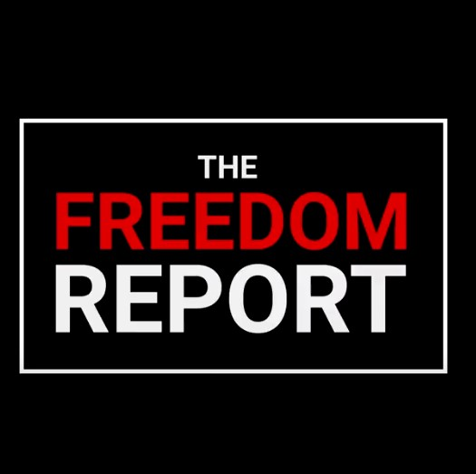

Insufficient signals for marking a page as anti-trans
Abigail
11 hrs
"Sex work", BDSM and p*rn are ways of the patriarchy to indoctrinate you, silly liberal handmaids.
Being a SWERF, a conservative, aphobic or racist.
While these traits are despicable (and also common among anti-trans people), the focus of this dataset is specifically on
anti-trans hatred. Also, don't tag as anti-trans just because someone likes an anti-trans page whose main focus
is not anti-trans hatred.
Grandma
11 hrs
If someone is transgendered, I think we should respect them, even if they used to be a boy, no matter their lifestyle choices.
That's what Jesus taught us.
Reasonably benevolent ignorance, incorrect terms.
When in doubt, assume good faith and don't tag someone or some page as anti-trans just because they're uninformed, a mediocre
ally, post problematic jokes, or don't take a stance.

The Freedom Report
11 hrs
In this new interview, we asked radical feminist Germaine Greer what she thinks about gender ID laws.
Being concerned with "free speech", "political correctness" or giving a platform to "both sides"
While this is an excuse often used by conservatives, it's not anti-trans per se. Assume good faith. Also, don't mark criticism/hatred
of trans people that is not linked to their being trans (eg. "Manning is a traitor of our country").
Signals for marking a page as anti-trans
Abigail
11 hrs
We must protect women's spaces from the female erasure that TIMs want to impose upon us.
Using common anti-trans dog-whistles
"Protecting women's spaces", "Female/lesbian erasure", "terf is a slur" and "trans-identified-(fe)male/MtT/FtT" are all very
frequent dog-whistles among anti-trans people. However, don't consider "womyn", "radfem" or "lesbophobia" alone
a signal (but do consider "womyn-born-womyn")
Racist Frog
11 hrs
More degeneracy from the liberal snowflakes. Have they decided which of the 72 genders they identify as today?
Common anti-trans strawman arguments
However, tag "identify-as-helicopter"-style jokes only if the context is anti-trans (since they are also sometimes used by
mediocre/problematic allies). Generic anti-LGBT pages can also be tagged as anti-trans (eg. pride parade = degeneracy).
Tiffany
11 hrs
Nowadays it's trendy to say you're trans, they're just heterosexual males that hurt our cause. You're either male or female
- stop. Also, it's perfectly fine to respect the spaces of biological women.
I'm not a transphobe but…
If a person is a self-declared "not a transphobe" only towards trans people who are binary, heterosexual, gender-conforming,
post-op and/or "don't fight for their rights too aggressively", still mark them as anti-trans.
Insufficient signals for marking a page as t-friendly
Julie
11 hrs
My endocrinologist told me I should switch to gel or patches. Thoughts?
Being transgender
Don't assume someone is not transphobic (or truscum/gatekeeper) just because they are trans themselves. Try not to treat
people differently just because of their gender, age or orientation.
Your Average Feminist Page
11 hrs
Another trans woman has been found killed in Texas. This violence must really end.
Condemning physical violence
Being against people being killed or raped is, for most people, a very low bar of expectations, even if they're very conservative
or religious. It's true that most conservatives will simply avoid posting anything at all, but err on the safe
side and don't tag as t-friendly.
Your Average LGBT Page
11 hrs
We must all stand against homophobia and transphobia, and support gay, lesbian, bi and trans people.
Condemning "homophobia and transphobia", supporting "LGBT"
Many people just really think of "gays and lesbians" when they say "LGBT", and they can still be biphobic or transphobic.
Don't tag as t-friendly unless a post is *specifically* talking about trans people.
Signals for marking a page as t-friendly
Adria
11 hrs
Shoutout to non-binary folks who feel hopeless in the current political climate ❤
Supporting trans or non-binary people
You're about to anonymously submit your first label. Note that a snippet of the relevant post/comment is also submitted.
You can reopen this help page by selecting Shinigami Eyes -> Help from the context menu.